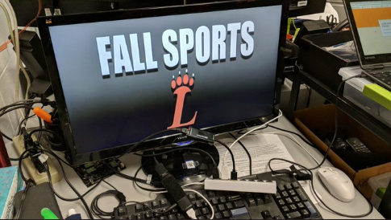

Innovation Lab
What I Hope To Learn In Innovation Lab
This year in Innovation Lab, I would like to gain more experience overall dealing with different types of problems relating to technology. I would also like to better my customer service skills when helping clients.
How Have I Spent My Time In The Innovation Lab
- Working on my Abre Planner App
- Working on this website
- Fixing tech related problems for both teachers and students
- Running group policy updates
- Installing/Reinstalling printer drivers
- Re-imaging computers
- Showing teachers how to complete various tasks on their computers
- Fixing various chromebook problems that other students have

Experiences So Far In Innovation Lab

- The ability to work with different types of technology and learn new types of technology
- The ability to work with people of different technology knowledge levels
What I Learned In Innovation Lab This Year
This year in Innovation Lab I was able to gain more experience working on different types of technical problems. I worked on everything from wiping a chromebook to fixing trust issues on our school's domain. Just being able to work on these different types of problems has given me more knowledge on fixing those specific issues as well as information to help me troubleshoot better.
Life In Quarantine
Personal Life
Personal life for me during quarantine hasn't been that much different from normal life, aside from things being canceled. My spring musical, Little Shop Of Horrors, was canceled and Kings Island has not opened yet. My days are pretty much the same thing everyday. I do schoolwork in the morning, I try to find some miscellaneous projects to work on in the afternoon, and I hang out with my family in the evening. We have been taking a lot more walks around the neighborhood and playing board games as a family to pass the time.
School Life
School during quarantine has definitely taken some getting used to. It's very different doing schoolwork and not being in a classroom setting. You don't really think about how nice it is to have the teacher right there in the room with you or that you are able to ask a question to a classmate sitting next to you. It is nice that at this point in the year almost all of my classes are review, so at least I don't have to learn the information on my own. Most of my classes were completely online already, except for lectures, so doing them from home wasn't a huge issue. However, classes like Orchestra, English, and Calculus were a bit different. Orchestra and English currently are just having us turn in Google docs instead of paper, but Calculus is having us do the work on paper and then scan it into the computer. This was somewhat difficult at first, but I got the hang of it after a few days.
Quarantine was somewhat nice at first because it provided a little break from everything in the world, it was also something new and exciting. Now we are about 2 months in and Im ready for it to be over.